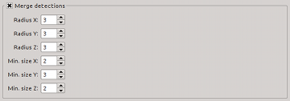

The settings below control how detections get merged into sources.
| Module / Parameter | Type | Values | Description |
|---|---|---|---|
| steps.doMerge | bool | true, false | Merge detected sources? |
| merge.mergeX | int | ≥ 0; default: 3 | Merging radius in first dimension in pixels. |
| merge.mergeY | int | ≥ 0; default: 3 | Merging radius in second dimension in pixels. |
| merge.mergeZ | int | ≥ 0; default: 3 | Merging radius in third dimension in pixels. |
| merge.minSizeX | int | ≥ 1; default: 3 | Minimum extent of genuine sources in first dimension. |
| merge.minSizeY | int | ≥ 1; default: 3 | Minimum extent of genuine sources in second dimension. |
| merge.minSizeZ | int | ≥ 1; default: 2 | Minimum extent of genuine sources in third dimension. |
| Default values are set in bold-face font. | |||